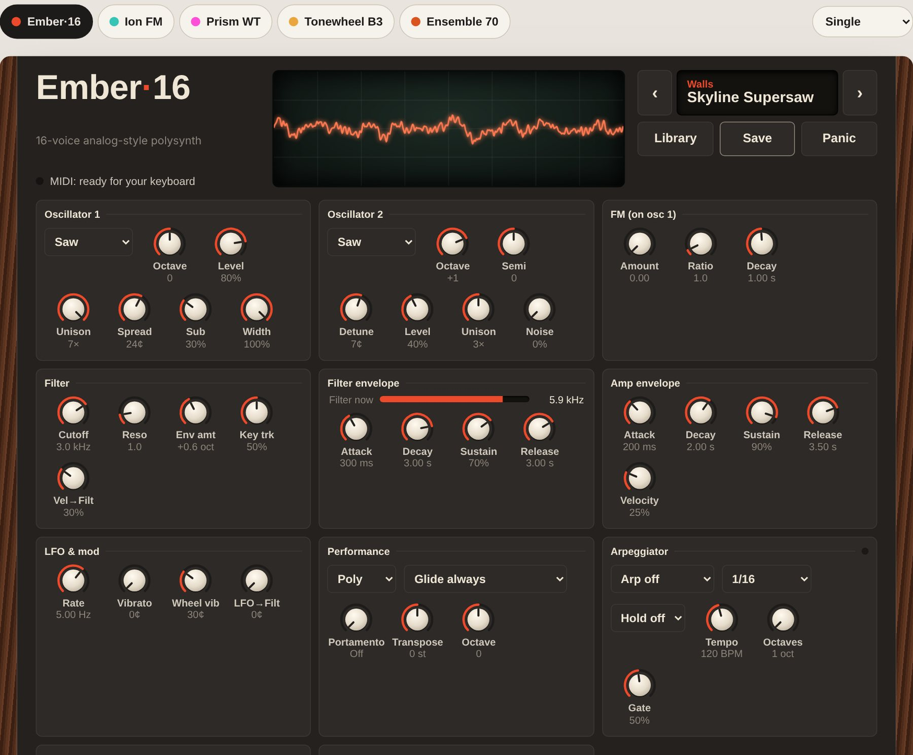

An analog polysynth, an 80s FM synth, a morphing wavetable synth, a tonewheel organ and a 70s string machine — 274 patches you can layer or split across your keyboard. Plug in a MIDI or MPE keyboard and play. Nothing to install.

Every sound is made live by the instruments' own engines, the way the hardware did it — no samples, no recordings.
Switch with the tabs at the top of the synth. Each one has its own engine, its own panel and its own library of patches.
Any USB MIDI keyboard works. No keyboard? Play with your computer keys: A to ; for notes, Z and X to change octave.
Chrome, Edge, Opera (including Opera GX) or Firefox. Safari doesn't support MIDI keyboards.
Connect your keyboard by USB first, then press Play Ember Studio and click Power on.
Your browser asks to use MIDI devices. Click Allow — the status light shows your keyboard's name.
Choose an instrument from the tabs, then use ‹ › or the [ and ] keys to step through its sounds, or open its Library.
Ember·16 reads per-note slides and pressure, so each note in a chord can bend and swell on its own.
Plug in, power on, and try layering Ensemble 70 under Ion FM’s electric piano.
Play Ember Studio